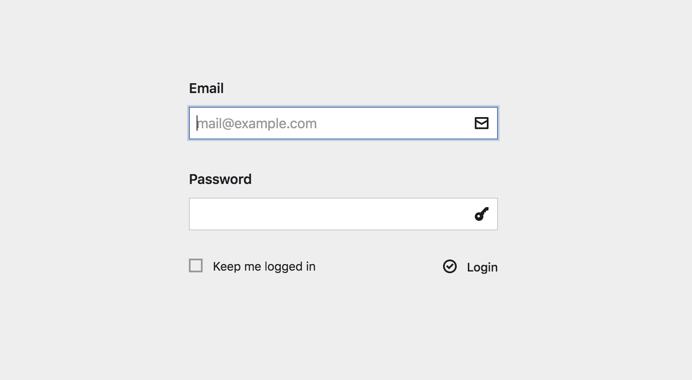
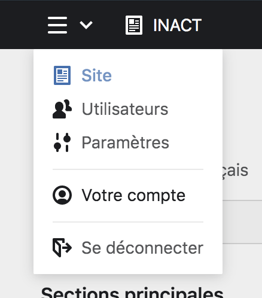

Se connecter ou se déconnecter du Panel #
Pour modifier le site internet, vous avez besoin de vous connecter au Panel.
Se connecter au Panel #
Pour vous connecter au panel, vous devez vous rendre à l’adresse : https://www.inact.fr/panel avec votre navigateur.
Un écran de connexion s’affiche, avec un formulaire. Dans les deux champs de celui-ci, renseignez l’email et le mot de passe de votre compte utilisateur·ice puis cliquez sur bouton login. Vous pouvez, en plus, cocher une case pour demander au site internet de vos garder en ligne le plus longtemps possible.

Se déconnecter du Panel #
Pour vous déconnecter du Panel, allez sur le menu déroulant représenté par un bouton hamburger. Dans la liste d’options affichées, vous devez cliquer sur le bouton se déconnecter en bas de la liste pour vous déconnecter du Panel.
